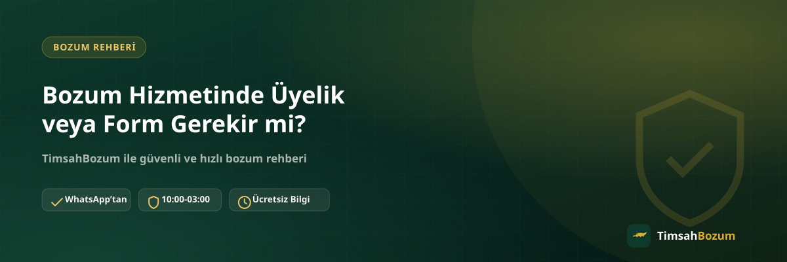

Bir platforma ilk kez işlem yaptıracak kişilerin aklına gelen ilk sorulardan biri, sisteme üye olmanın ya da bir form doldurmanın gerekip gerekmediği. Çoğu finansal işlem sitesinde hesap açmak, kişisel bilgi girmek hatta kimlik belgesi yüklemek istendiği için bu beklenti oldukça doğal. Bu yazıda bozum hizmetinde üyelik veya form sürecinin neden olmadığını, işlemin nasıl ilerlediğini ve bu yapının seni ne şekilde etkilediğini anlatıyoruz.
Bozum İşlemi İçin Hesap Açmak Gerekir mi?
TimsahBozum'da işlem yaptırmak için herhangi bir hesap oluşturman gerekmiyor. Kullanıcı adı belirlemek, şifre oluşturmak veya bir profil doldurmak gibi adımların hiçbiri süreçte yer almıyor. Bunun yerine tüm işlem, resmi WhatsApp hattımız üzerinden doğrudan yazışarak yürütülüyor; yani sisteme giriş yapman değil, mesaj göndermen yeterli.
Neden Bir Üyelik Sistemi Kullanılmıyor?
Üyelik sistemleri genellikle tekrarlayan işlemleri takip etmek, kullanıcı geçmişi tutmak veya bir platform üzerinden ödeme altyapısı işletmek için kurulur. Bozum hizmeti ise işlem bazlı ilerleyen, her seferinde WhatsApp üzerinden doğrudan iletişime dayanan bir yapı. Bu yüzden ayrı bir hesap sistemi kurmak, süreci hızlandırmak yerine gereksiz bir adım eklemekten öteye geçmez.
Form Doldurmam İsteniyor mu?
Hayır, herhangi bir başvuru formu, işlem talebi formu veya iletişim formu doldurman gerekmiyor. Paylaşman gereken tek bilgi, kod tabanlı bir hizmet bozduruyorsan kodun kendisi, bakiye tabanlı bir hizmet bozduruyorsan güncel bakiyeni gösteren okunaklı bir ekran görüntüsü. Bu bilgiyi WhatsApp mesajında doğrudan iletmen, ayrı bir form doldurmaktan çok daha hızlı sonuç verir.
Kimlik Belgesi veya Fotoğraf İstenir mi?
Hayır. Kimlik fotoğrafı, kimlik numarası veya buna benzer bir doğrulama belgesi talep edilmiyor. Süreç, kodun veya bakiyenin sahipliğini kanıtlayan bir belge üzerinden değil, doğrudan WhatsApp üzerinden yürüyen bir teyit mekanizmasıyla ilerliyor. Bu, hem senin paylaşman gereken bilgi miktarını azaltıyor hem de işlemi gereksiz bürokrasiden arındırıyor.
Diğer Platformlar Neden Form veya Üyelik İstiyor?
Bankacılık uygulamaları, e-ticaret siteleri veya büyük ölçekli finansal platformlar genellikle uzun vadeli kullanıcı ilişkisi kurmak, işlem geçmişini saklamak veya yasal yükümlülükler gereği kimlik doğrulaması yapmak amacıyla üyelik ve form sistemleri kullanır. Bozum hizmeti ise tek seferlik, WhatsApp üzerinden yürüyen bir işlem modeline dayandığı için bu tür bir altyapıya ihtiyaç duymuyor. Bu fark, iki farklı hizmet modelinin doğal bir sonucu.
Üyeliksiz Bir Sistem Ne Kadar Güvenilir?
Güvenlik, üyelik sisteminin varlığından değil, işlemin nasıl teyit edildiğinden gelir. Bozum sürecinde her adım WhatsApp üzerinden yazılı olarak ilerler: bilgini paylaşırsın, oranı teyit edersin, onay verdikten sonra ödemen yapılır. Bu yazışma kaydı, ileride bir soru çıkması durumunda elinde kalan somut bir referans oluşturur. Detaylı bir kontrol listesi için bozum işlemi yaparken nelere dikkat etmeli yazımıza da göz atabilirsin.
Peki Hangi Bilgiyi Paylaşman Gerekiyor?
Bozduracağın hizmete göre paylaşman gereken bilgi değişiyor. Razer Gold ve iTunes gibi kod tabanlı hizmetlerde tek kullanımlık kodun kendisi yeterli; bu hizmetlerde kodun tam değeri tek seferde bozdurulur, kısmi bozum söz konusu değil. Pokus, mobil ödeme gibi bakiye tabanlı hizmetlerde ise güncel bakiyeni gösteren bir ekran görüntüsü yeterli oluyor ve bu hizmetlerde bakiyenin bir kısmını da bozdurabiliyorsun. Her iki durumda da paylaşman gereken şey bir belge veya form değil, işlemin kendisiyle doğrudan ilgili bir bilgi.
Bilgi Paylaşımı Neden Bu Kadar Az?
Süreç, hesabına giriş yapılmasını değil, elindeki değerin bir bakışta doğrulanabilmesini hedeflediği için istenen bilgi minimum düzeyde tutuluyor. Bir kod ya da bir ekran görüntüsü, işlemi başlatmak için gereken tüm veriyi zaten içeriyor. Bu yüzden ek bir kimlik doğrulaması, form ya da profil bilgisi işlemin sonucunu değiştirmiyor, sadece süreci uzatmış olurdu.
Biri Senden Üyelik Bilgisi veya Form İsterse Ne Yapmalısın?
TimsahBozum adına ulaştığını söyleyen biri senden üyelik bilgisi, form doldurmanı ya da kişisel belge göndermeni isterse bu talebi karşılamadan önce durup değerlendirmen gerekir. Gerçek süreçte böyle bir adım hiçbir zaman yer almadığı için bu tür bir istek, resmi hattımız dışında hareket eden birinden geldiğinin işareti olabilir. Böyle bir durumda bilgi paylaşmadan önce +90 543 887 21 71 numaralı resmi WhatsApp hattımızdan doğrudan teyit almalısın; sitede yayınlanan numara dışından gelen hiçbir talep bizim adımıza yapılmış sayılmaz.
Üyelik Olmaması İşlem Hızını Nasıl Etkiliyor?
Bir hesap oluşturmadan, giriş bilgisi hatırlamadan veya form onayı beklemeden doğrudan mesaj atabilmen, sürecin ilk adımını önemli ölçüde kısaltıyor. WhatsApp'ta yazdığın ilk mesajdan itibaren süreç işlemeye başlıyor; ayrı bir kayıt sayfasında zaman kaybetmene gerek kalmıyor. Bu da özellikle ilk kez işlem yapacaklar için süreci daha anlaşılır ve pratik hale getiriyor. İlk kez bozum yapacaklar için hazırladığımız kapsamlı rehber yazımızda süreci baştan sona adım adım bulabilirsin.
Bu Yapı Özellikle Kimler İçin Avantajlı?
Üyeliksiz ve formsuz işleyen bu yapı, özellikle elinde tek seferlik bir kod veya küçük bir bakiye kalmış, bunun için uzun bir kayıt sürecine girmek istemeyen kullanıcılar için pratik bir çözüm sunuyor. Arada sırada bozum yaptıran biri için her seferinde şifre hatırlamak, profil güncellemek ya da geçmiş işlem kayıtlarını yönetmek gereksiz bir yük olurdu. WhatsApp üzerinden yürüyen bu model, işlemi ihtiyaç anında başlatıp bitirmeni sağlıyor; aradan zaman geçse bile tekrar giriş bilgisi hatırlamana gerek kalmıyor.
İlgili Yazılar
- Bozum İşleminde Hesabıma Erişim Veriyor muyum?
- İlk Kez Bozum Yapacaklar İçin Kapsamlı Rehber
- Bozum İşlemi Yaparken Nelere Dikkat Etmeli
Üyelik veya form derdi olmadan işlemini başlatmak istersen WhatsApp hattımıza yazman yeterli.